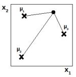
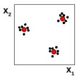
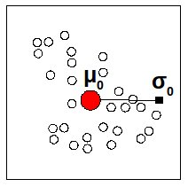
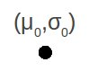
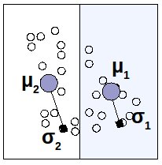
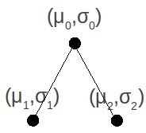

Torna alla pagina di Sistemi Intelligenti
:: Sistemi Intelligenti - Appunti del 20 Ottobre ::
La lezione di oggi è stata tenuta - indovina un po' - dal prof Ferrari.
Radial Basis Function Networks
Le reti neurali RBF sono tra i modelli più semplici della famiglia feed-forward. Se le reti che abbiamo visto finora avevano funzione di attivazione sigmoidale (vedi wikipedia), queste ce l'hanno a simmetria radiale: l'uscita è proporzionale a un valore che rappresenta la distanza, o ancora meglio, l'output è strutturato sulla distanza.
Il basis del nome, deriva del fatto che la formula del percettrone è una sommatoria di funzioni, ovvero una loro combinazione lineare. A questo punto è fin troppo chiaro (!): in algebra lineare una base è proprio l'insieme di vettori indipendenti che generano uno spazio vettoriale attraverso una combinazione lineare. Eureka!
Quindi? Quindi le funzioni (di qualsiasi tipo) che si vogliono approssimare con una rete neurale, possono essere ottenute come combinazioni lineari delle formule di attivazione dei singoli neuroni.
La base viene calcolata come: F(x) = Σi wi hi(x), per i = 1..M
e dove hi(x) = h(||x - μi||)
Notiamo in primis che hi(x) non dipende tanto da x, quanto da μi. Quest'ultimo è il centro dell'unità a simmetria naturale, ed è considerato come elemento dello spazio di ingresso.

Rivediamo il concetto di "output strutturato sulla distanza" con un esempio su uno spazio di ingressi bidimensionali, quello riportato nella figura accanto. Le x indicano le posizioni dei neuroni, mentre il pallino il centro. Alla luce di quanto detto finora, la risposta del neurone 3 sarà maggiore di quella del neurone 2 poiché è più vicino al centro.
Esempi di funzioni a simmetria radiale
Ecco un elenco di funzioni a simmetria radiale:
(1) thin plate spline
(2) multiquadrica
(3) multiquadrica inversa
(4) gaussiana (la più usata)
La (1) e la (2) divergono agli estremi, mentre la (3) e la (4) godono della proprietà di località. Per località si intende che la risposta della rete sarà forte in un certo interno, e via via più debole allontanandosi da esso. Per le reti che godono di questa proprietà ha senso addestrare la risposta del singolo neurone in tali regioni; il motivo è che la procedura diventa meno costosa di quella normale feed-forward.
Tutte queste funzioni devono avere un centro, indipendentemente dal comportamento che poi assumeranno in relazione alla distanza.
E' inoltre possibile configurarle tramite parametri; ad esempio nella gaussiana c'è quello che modula la deviazione standard, regolandone la zona di influenza sull'uscita della rete. Attenzione però: un errore sulla regolazione dei parametri comporta un errore sull'approssimazione della funzione. In particolare bisogna stare attenti alla stima del valore di quei parametri che si trovano all'esponente, dato che con piccole variazioni avremo grandi conseguenze.
La formula della RBF Gaussiana presentata a lezione non ci è data saperla prima della pubblicazione dei lucidi, nel frattempo potremo dire di lei che (fidatevi):
- μi è il centro
- σi fa da modulatore della risposta: più è alto e più la gaussiana si alzerà, e viceversa. In questo modo si può regolare lo spazio dell'intorno, spalmandolo o concentrandolo
Con le reti RBF si può dimostrare che un solo strato è sufficiente per ottenere qualsiasi funzione, mentre in generale ci volevano come minimo due strati sigmoidali. Questo non significa che non si possano usare più strati, ma sarebbe fatica inutile.
I parametri strutturali della gaussiana sono centro (μ) e ampiezza (σ), una coppia per ogni unità della rete. I parametri sinaptici sono i pesi sinaptici (w), che permettono di rappresentare diversi tipi di funzioni mantenendo uguale il modello.
In un certo senso possiamo affermare che regolando i parametri strutturali stiamo "regolando l'hardware" della rete neurale; mentre regolando i pesi sinaptici stiamo "configurando il software".
Hybrid learning
L'idea di hybrid learning è stata proposta da Moody & Darken, e consiste nell'applicare tecniche di apprendimento diverse a seconda dei parametri. In questo schema si fissano (una volta avuto il dataset di esempi) le posizioni dei neuroni attraverso la tecnica del clustering: dato un insieme di punti nello spazio, identificarne un sottoinsieme che ne rappresenti bene la distribuzione. Consideriamo ad esempio la seguente situazione in uno spazio bidimensionale:

I puntini in nero sono gli esempi, mentre in rosso sono indicati i centroidi individuati dal clustering, che saranno da ora in poi considerati come approssimazione degli insiemi di punti. L'ampiezza viene invece stimata in modo proporzionale rispetto alla distanza dai vicini.
Col clustering fissiamo quindi i parametri strutturali, poiché ci vengono forniti i centroidi che rappresentano le nostre unità di cui sappiamo calcolare centri e ampiezze.
Per quanto riguarda invece i pesi sinaptici, l'hybrid learning prevede di calcolarli con metodi di sostituzione lineare.
L'hybrid learning è una tecnica molto leggera, ma quanto sia realmente efficiente è difficile dirlo.
In un'approssimazione con RBF, i parametri dell'algoritmo di addestramento potrebbero essere: numero di centroidi utilizzati (M), numero di centroidi vicini considerati dall'algoritmo (P), costante α. Quest'ultima è la costante di proporzionalità con cui moltiplico la media della distanza tra i valori dei P nodi vicini, necessaria per calcolare a sua volta σ.
Diminuendo il valore di M perdo informazioni nelle zone di maggiore dettaglio.
Diminuendo il valore di α stringiamo la gaussiana, quindi l'addestramento risentirà poco dei punti distanti e molto di quelli vicini. Aumentando α otteniamo l'effetto inverso.
Problema del model selection su hybrid learning
Il problema del model selection si riduce a tre domande:
- che rete neurale scelgo?
- quanti neuroni uso?
- che valore dò ai parametri?
L'algoritmo di Moody & Darken distribuisce la gaussiane sulle ascisse, senza curarsi di dove ci sono maggiori variazioni della funzione. In altre parole utilizziamo solo i dati di input, e poco importa se considerando l'uscita avrebbe più senso concentrare più gaussiane in un punto (perché più elaborato da modellare) e poche in un altro.
La smoothness della funzione è regolata da P ed α, che dobbiamo regolare ad occhio e procedendo per tentativi controllando la risposta; cosa fattibile con questo algoritmo, dato che è piuttosto semplice e snello.
Abbiamo dato risposte chiare ed esaustive sul come risolvere il problema del model selection su hybrid learning? NO, continua a valere la regola del "scrivi, cancella e riscrivi".
Modello incrementale
Con il modello incrementale abbiamo l'allocazione delle unità in base a criteri che riguardano sia l'input che l'output, utilizzando la tecnica del gradiente per calcolare l'ottimo e adattare i parametri (superando così i limiti dell'hybrid learning).
Un po' di anni fa era possibile risparmiare un po' di tempo di calcolo sostituendo l'esponenziale della funzione radiale con un polinomio che la approssimi. In questo modo aumentano gli accessi in memoria e diminuisce il numero di calcoli da fare. Oggi però non è più una scelta furba: l'attuale collo di bottiglia è proprio l'accesso in memoria, il tempo di calcolo non è più un problema.
Alcuni esempi di algoritmi di costruzione incrementale sono il RAN e il Growing RBF, che spero potranno essere presto rivisti sulle slide.
Regression tree
Il regression tree è un costrutto che ci viene prestato da altre discipline ma che ben si sposa con le reti neurali. L'idea è quella di disporre le nostre unità neurali procedendo con partizoni binarie dello spazio di input.
1.
Si parte da una radice che è posizionata in un centro 0, media di tutti i punti forniti dal dataset, e con sigma 0 (μ0,σ0)
| 
| 
|
2.
Seleziono un punto di sezione e mi chiedo in che direzione partizionare lo spazio degli ingressi: in orizzontale o in verticale? Dipende dall'errore che avremmo in un caso piuttosto che nell'altro, quindi li provo entrambi, verifico e scelgo di conseguenza.
| 
| 
|
3.
Quando effettivamente partiziono origino due figli, di cui andrò a calcolare (μ1,σ1) e (μ2,σ2), e che riporterò nel regression tree aggiornato.
|
4.
Ripeto i passi 2 e 3, con la possibilità di cambiare direzione di taglio.
|
|
|
Torna alla pagina di Sistemi Intelligenti